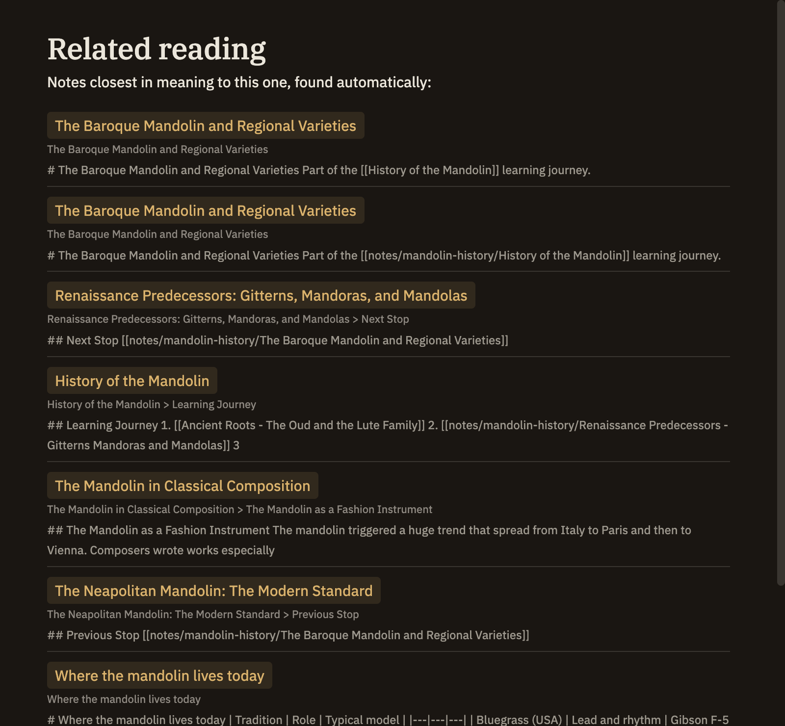

Search cells
A search cell drops a live list of related notes right into your writing — a ready-made "See also", or a running roundup of everything you've touched on a topic. You can find notes two ways: by meaning, which catches notes that are about the same thing even when they use different words, or by keyword, which finds the exact words you name. Like query cells, a search cell only reads, and refreshes on its own as your notes grow.
Search by meaning
Open a cell with :::query-semantic, write a sentence or a few words describing what you're after, and close it with :::. Minerva lists the notes closest in meaning, each with a short snippet and a link. Leave the cell empty and it instead lists notes related to the one you're currently in.
:::query-semantic
how attention shapes what we remember
:::Search by keyword
Open a cell with :::query-search and put your words inside. Minerva lists the notes that contain them, best matches first — the same kind of search as the app's find box, embedded in your note and always current.
:::query-search
working memory
:::Adding options
As with query cells, put a few settings at the top, one per line, then a line of three dashes — --- — before the text you're searching for.
compact: true for a bare list of links.note, source, excerpt (your saved quotations), or all. Notes alone is the default.
Reach for meaning when you want notes on the same idea however they're worded, and keyword when you know the exact term you're hunting for. Search by meaning draws on the same understanding of your notes that powers Related notes in the sidebar; if that isn't ready yet, a meaning cell simply comes up empty.